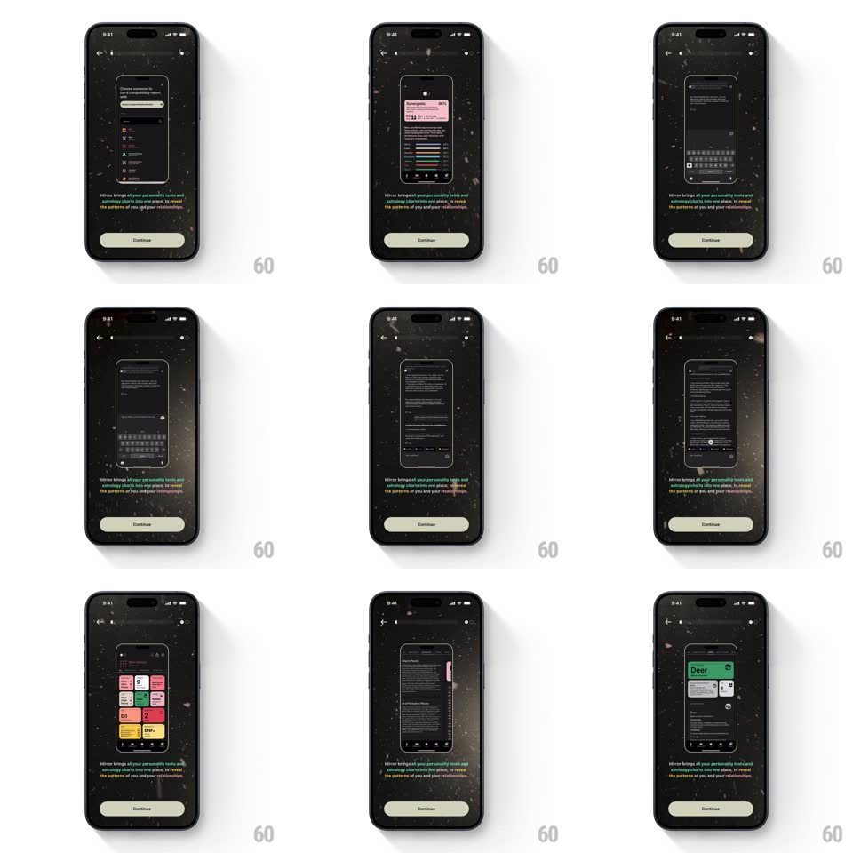

Media
Frame-by-frame

Rebuild this animation 1:1: Mirror's value-prop onboarding screen - a device mockup loops a video preview of the app while dust particles drift across the dark background and the rainbow-gradient copy sits below.

Rebuild this animation 1:1: Mirror's value-prop onboarding screen - a device mockup loops a video preview of the app while dust particles drift across the dark background and the rainbow-gradient copy sits below.
## Integration
Integration: stack-agnostic spec - springs given as stiffness/damping, timed motions as duration + curve; map every value to your framework and animation library of choice.
## Scene
A dark onboarding screen: back chevron and progress dots up top, a centered phone mockup playing a looping video tour of the app (personality test cards, typing, charts), the value-prop line beneath ("Mirror brings all your personality tests and astrology charts into one place, to reveal the patterns of you and your relationships." with key phrases in a rainbow gradient), and a Continue button pinned at the bottom. Fine dust particles float across the whole screen.
## Motion spec
Pattern: looping in-mockup video over a drifting particle field.
- The mockup video loops seamlessly - a cutdown of real app flows (~8s), autoplaying, muted, no controls; the phone frame stays still so the screen content is the motion.
- The particle field drifts constantly: fine dust motes (2-4px, low opacity) rising and sliding on individual slow vectors (15-30s crossings), a few catching a faint warm tint - like light in a dark room.
- The copy's gradient phrases shimmer subtly (gradient position drifting, 6s loop) - the rainbow breathes without moving the text.
- The scene enters as one calm build: mockup fades up and scales 0.96 -> 1 (400ms), copy lines fade 120ms apart, Continue rises last (250ms).
- Between value-prop pages the mockup crossfades to the next loop (300ms) while the particles never stop - the dust is continuous across the whole flow.
## Calibration
- Particles are atmosphere, not content - they must never cross into legibility; keep them faint.
- The mockup is the demo - its video does the selling, so nothing else competes for motion.
## Reduced motion
Particles freeze; the mockup video keeps playing (it's content); gradient holds static.
## Don't miss
- The gradient highlights only the meaningful phrases ("personality tests", "astrology charts", "patterns") - not whole sentences.
- Continue is quiet and constant - the screen persuades, the button just agrees.